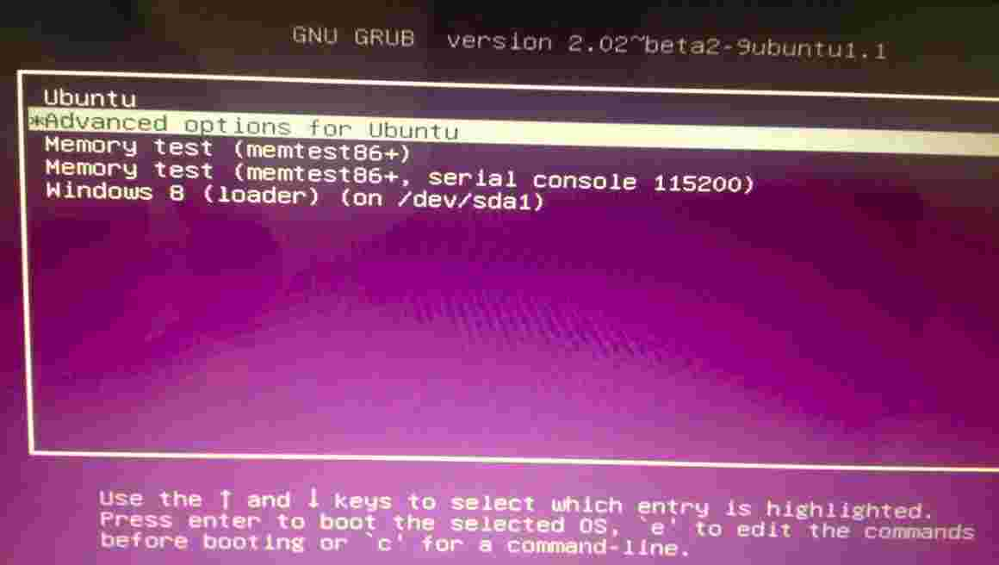
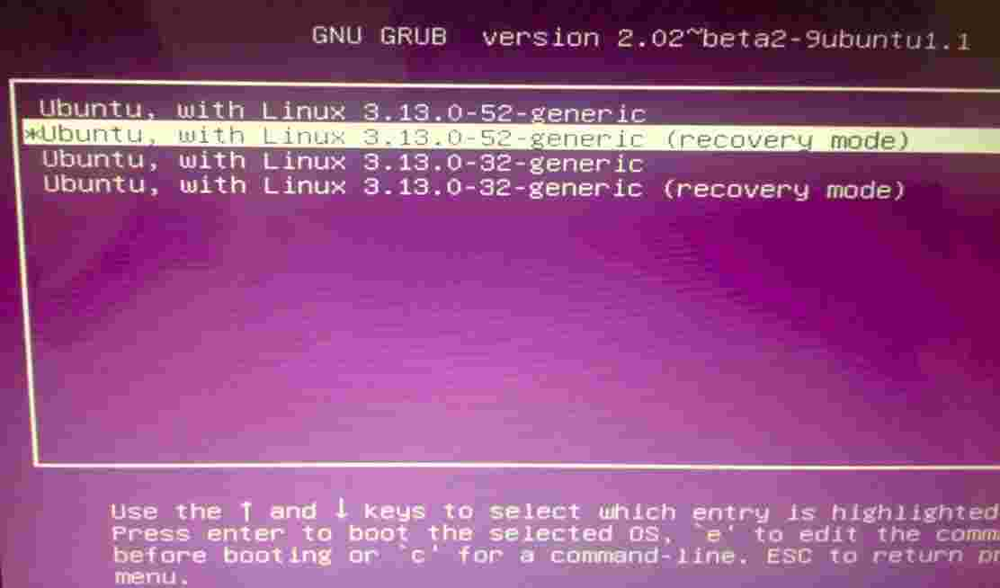
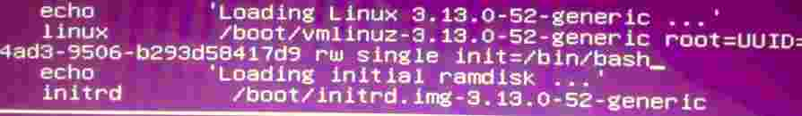

解决Ubuntu18.04安装Nvidia驱动开机卡死
引言
最近笔者在折腾Ubuntu18.04时遇到了一个小问题，笔者笔记本是双显卡的，在强迫症的驱使下，总觉得Nvidia的闭源驱动很给力，然后使用"ubuntu-drivers autointall"这个命令自动安装了Nvidia显卡闭源驱动，安装一时爽，重启的时候就杯具了，卡在启动界面一直进不去系统，本文就将笔者处理这个问题的过程分享给大家，在遇到相同情况后，如何不重装系统，将N卡驱动卸载掉，顺利进入系统。
文章目录
0×1.Ubuntu如何进入单用户模式
首先，因为我们现在无法进入图形界面，所以需要进入单用户模式下，在单用户模式下进行Nvidia驱动卸载操作，在grub启动界面，选择第二项"ubuntu高级设置"，回车，如下图所示：
然后，选择第二项"recovery mode"，按一下键盘上的"e"键，进入编辑模式：
在编辑模式中，将光标移动到以字符"linux"开头的那一行，将它的"ro recovery nomodestset"，修改为"rw single init=/bin/bash"，这一行后面如果还有内容全部删除（只是删除本行后面的内容，不要删除下一行的内容），然后按"ctrl+x"或"F10"重新载入，进入单用户模式，如下图所示：
重新载入配置后，即可进入单用户root模式。
0×2.如何在单用户模式下卸载Nvidia驱动
在单用户模式下，使用下面的命令卸载Nvidia驱动：
#使用"apt remove nvidia* --purge"来卸载所有N卡相关的驱动，并且清除配置信息（--purge参数，卸载软件并且清除软件相关的配置信息） qing@qingsword.com:~$ apt remove nvidia* --purge #期间会出现个[Y/N]输入Y确认删除N卡全部驱动
删除完成后，重启计算机，看看是不是能够顺利的进入桌面环境了，Ubuntu系统内核对Nvidia卡的闭源驱动一向来支持就不是很好，建议还是不要折腾了。